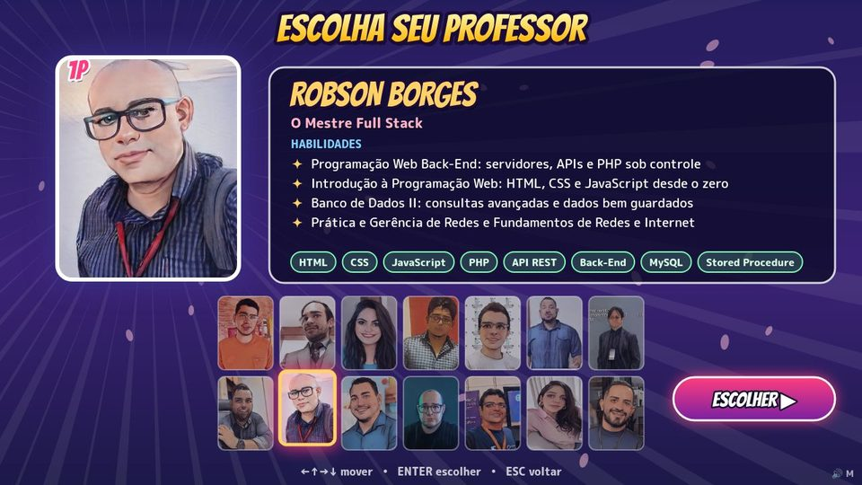
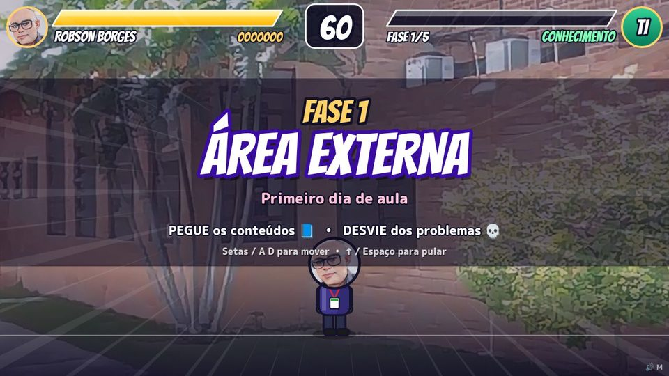
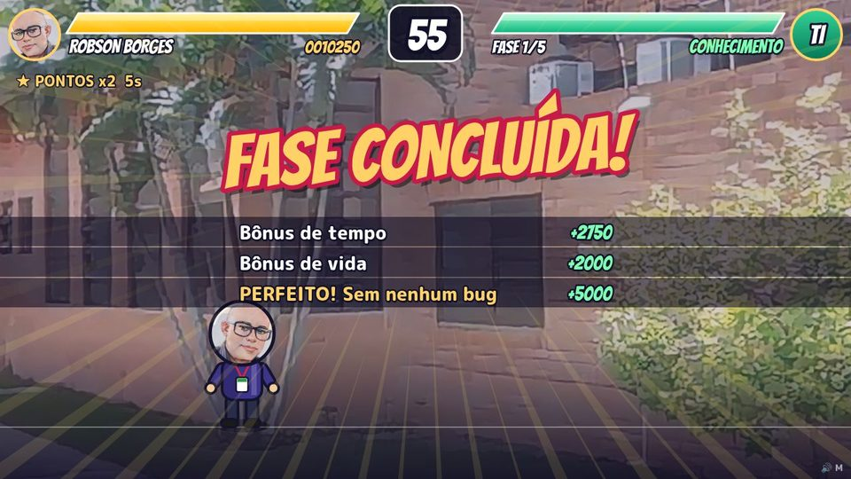
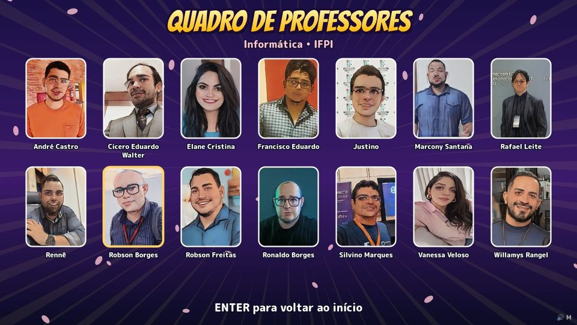
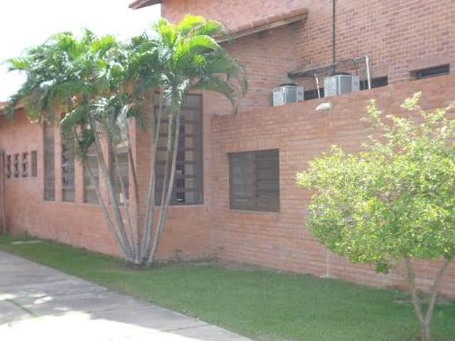
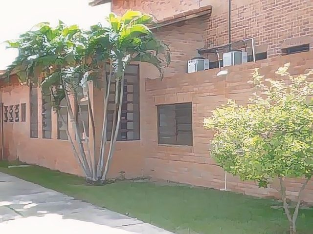
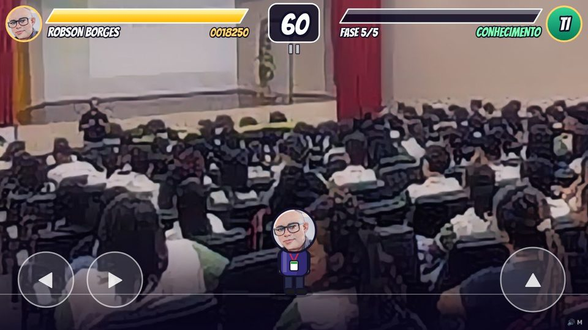

1. Visão geral
O jogo funciona como um fliperama clássico. O jogador escolhe um professor, entra em uma fase ambientada na escola e precisa pegar os conteúdos das disciplinas (etiquetas verdes) enquanto desvia dos problemas (etiquetas vermelhas, como BUG e Erro 404). Quando a barra de Conhecimento enche, ele passa de fase. São cinco fases, e o jogo termina mostrando o quadro completo de professores.




2. Tecnologias
A regra do projeto foi não usar nenhuma biblioteca de jogos, como Phaser ou Unity. Tudo é feito com recursos que já vêm no navegador, o que é ótimo para aprender como um jogo funciona por dentro.
HTML5 + CSS
Uma página mínima com um único <canvas>. O CSS só centraliza a tela e aplica o fundo.
Canvas 2D
API de desenho do navegador. Todas as telas, personagens, barras e efeitos são desenhados com ela, 60 vezes por segundo.
JavaScript (ES2020+)
Lógica do jogo sem frameworks: objetos, arrays, Set, Map, arrow functions, async/await.
Web Audio API
Música e efeitos gerados por osciladores em tempo real. Não existe nenhum arquivo .mp3 no projeto.
Python + IA (AnimeGAN)
Redes neurais transformaram as fotos dos professores e da escola em ilustrações no estilo anime.
Google Fonts
Bangers nos títulos, com cara de mangá, e M PLUS Rounded 1c nos textos.
localStorage
Guarda o recorde e a preferência de som no próprio navegador.
Chrome Headless
Testes automáticos: um script abre o jogo sem janela, aperta teclas e tira capturas de tela.
Git + GitHub Pages
Versionamento e hospedagem gratuita do site estático.
3. Conhecimentos necessários
A maior parte do conteúdo é vista nas disciplinas iniciais dos cursos de TI. A tabela mostra onde cada conhecimento aparece no jogo.
| Conhecimento | Onde aparece no jogo | Nível |
|---|---|---|
| Lógica de programação | Condições de vitória, derrota, combos e troca de telas | Básico |
| JavaScript: funções, objetos e arrays | Lista de itens na tela, dados dos professores, partículas | Básico |
| Eventos do navegador | Teclado (keydown/keyup), mouse e toque (pointerdown) | Básico |
| Plano cartesiano | Posição (x, y) de tudo; no canvas o eixo Y cresce para baixo | Básico |
| Física básica (velocidade, aceleração) | Gravidade e pulo do personagem, itens caindo | Intermediário |
| Geometria: detecção de colisão | Teste de sobreposição de retângulos (AABB) | Intermediário |
| Máquina de estados | Título → seleção → fase → pausa → final | Intermediário |
| Trigonometria (seno e cosseno) | Balanço dos braços, itens em zigue-zague, explosões de partículas | Intermediário |
| Áudio digital (frequência, notas MIDI) | Sintetizador e sequenciador de música | Avançado |
| Python e redes neurais (uso) | Conversão das fotos para anime | Avançado |
| Git e terminal Linux | Versionamento, testes e publicação | Básico |
4. Arquitetura
O projeto tem apenas três arquivos JavaScript, cada um com uma responsabilidade. Separar os dados do motor permite que alguém sem experiência em programação altere professores e habilidades editando só um arquivo.
O laço do jogo (game loop)
Todo jogo em tempo real repete o mesmo ciclo cerca de 60 vezes por segundo: ler a entrada → atualizar o estado → desenhar. O tempo entre dois quadros (dt, em segundos) entra em todos os cálculos de movimento. Assim o jogo roda na mesma velocidade em um monitor de 60 Hz ou de 144 Hz.
Máquina de telas
Uma variável tela guarda em que parte do jogo estamos. Cada tela tem sua própria função de atualizar e de desenhar, e a função irPara() faz as transições.
Estrutura de pastas
5. Passo a passo
A seguir estão as etapas na ordem em que o jogo foi construído. Os trechos de código são do projeto real, às vezes resumidos para caber na explicação.
Transformar as fotos em anime com IA
Python · PyTorch · onnxruntime
A ideia era ter um visual de anime, sem pixel art. Um filtro comum de "desenho" não bastava, então usamos duas redes neurais generativas (GANs) já treinadas:
- AnimeGAN2 face_paint_512_v2: treinada especialmente em rostos. Foi usada nos retratos dos professores.
- AnimeGANv3 Shinkai: imita o estilo de paisagem dos filmes de Makoto Shinkai. Foi usada nos cenários da escola.

ANTES
DEPOISA rede recebe a imagem como um tensor de números entre −1 e 1 e devolve a imagem transformada. O modelo roda na CPU, sem placa de vídeo, em poucos segundos por foto:
A página HTML e o canvas
index.html · css/jogo.css
O HTML é mínimo: um <canvas> e três scripts, carregados nesta ordem. Primeiro vêm os dados, depois o som e por fim o jogo, que usa os dois anteriores.
O jogo é todo desenhado numa resolução lógica fixa de 1280×720. Para ficar nítido em qualquer tela, inclusive celulares com alta densidade de pixels, o canvas real é redimensionado e o desenho é ampliado com uma matriz de transformação:
O laço principal
js/jogo.js
requestAnimationFrame pede ao navegador para chamar nossa função antes de desenhar o próximo quadro. Medimos o tempo que passou (dt) e limitamos esse valor a 0,05 s. Assim, se a aba ficar em segundo plano, o personagem não "teletransporta" quando o jogador voltar.
Todo movimento é multiplicado por dt. Por exemplo, x += velocidade * dt faz o objeto andar velocidade pixels por segundo, seja qual for o FPS.
Teclado, mouse e toque
js/jogo.js
Jogos precisam de duas perguntas diferentes sobre o teclado:
- "Está segurando?": serve para andar enquanto a seta está pressionada. Usa o conjunto
teclas. - "Acabou de apertar?": serve para pular ou confirmar uma única vez. Usa o conjunto
apertadas, que é esvaziado a cada quadro.
No celular, pointerdown e pointermove registram cada dedo num Map. A cada quadro, verificamos se algum dedo está dentro de um dos botões circulares desenhados na tela, usando a distância entre dois pontos (Math.hypot).

A máquina de telas
js/jogo.js
Em vez de vários if espalhados, cada tela tem sua função. A irPara() troca de tela, zera o cronômetro local tTela, que é usado nas animações de entrada, e escolhe a música.
tTela: para o título "FASE 1" deslizar da esquerda, basta calcular x = (1 - suave(tTela / 0.4)) * -W. Não é preciso guardar estado de animação: a posição sai direto do tempo.Os dados dos professores
js/dados.js
Nome, retrato, cor do uniforme, título de "lutador", habilidades e palavras de cada disciplina ficam num array de objetos. As habilidades foram escritas a partir do horário de aulas de cada professor. As disciplinas são as palavras que caem durante o jogo quando aquele professor é escolhido.
A tela de seleção
js/jogo.js
Os retratos ficam em uma grade. Com as setas o cursor se move, e nas bordas ele "dá a volta" para o outro lado usando o operador de resto %. Clicar em um retrato o seleciona; clicar de novo confirma.
O painel quebra as habilidades em várias linhas medindo cada palavra com ctx.measureText(), já que o canvas não faz quebra de linha automática.
Física do personagem: andar e pular
js/jogo.js
O personagem tem posição (x, y) e velocidade (vx, vy). A cada quadro, a gravidade aumenta a velocidade vertical e a velocidade muda a posição. Isso se chama integração de Euler. Como o eixo Y do canvas cresce para baixo, pular significa dar uma velocidade negativa.
Clique no quadro ou aperte Espaço para pular. Mude os valores e veja a trajetória (pontos amarelos).
impulso² / (2 × gravidade). Com os valores do jogo: 860² / 5000 ≈ 148 px, o suficiente para alcançar itens um pouco acima da cabeça.Itens caindo do céu
js/jogo.js
Um temporizador cria um item novo em intervalos que diminuem a cada fase. O tipo do item é sorteado com probabilidades: cerca de 6% de poderes, uma fatia crescente de problemas e o resto de conteúdos. A largura da etiqueta é medida pelo texto, e alguns itens descrevem um zigue-zague com seno.
Colisão, pontos e combos
js/jogo.js
A forma mais usada de detectar colisão em jogos 2D é a AABB (Axis-Aligned Bounding Box). Cada objeto é tratado como um retângulo alinhado aos eixos, e dois retângulos se tocam se estiverem sobrepostos nos dois eixos ao mesmo tempo.
Arraste a etiqueta (mouse ou dedo) sobre o personagem. As quatro condições acendem em verde quando são verdadeiras. Só existe colisão quando todas estão verdes.
Ao pegar um conteúdo, o combo aumenta. A cada 5 acertos seguidos o multiplicador de pontos sobe (até ×5). Deixar um conteúdo cair no chão zera o combo. Ao encostar em um problema, o jogador perde vida, fica invulnerável por 1,3 s (o personagem pisca) e é empurrado para trás.
HUD no estilo arcade
js/jogo.js
O HUD imita o Street Fighter. A barra de vida fica à esquerda, o cronômetro no centro e a barra de conhecimento à direita, espelhada. As barras são paralelogramos: desenhamos o contorno inclinado e usamos ctx.clip() para que o preenchimento respeite o formato.
O efeito de rastro de dano, comum nos jogos de luta, usa dois valores: a vida real e a vida mostrada, que persegue a real devagar (vidaMostrada += (vida - vidaMostrada) * dt * 3). A diferença entre as duas aparece em vermelho.
Efeitos visuais de anime
js/jogo.js
Pequenos efeitos dão muita "vida" ao jogo:
- Partículas: estrelinhas lançadas em ângulos aleatórios com
cos/sine puxadas pela gravidade. Somem após menos de um segundo. - Linhas de velocidade: triângulos finos saindo do centro, efeito clássico dos mangás.
- Tremor de tela: um
ctx.translate()aleatório por alguns quadros ao levar dano. - Texto com contorno grosso:
strokeTextcom linha larga e depoisfillTextpor cima. - Personagem chibi: o retrato recortado num círculo (
arc+clip) sobre um corpo desenhado com formas arredondadas e sombreamento em duas cores (cel shading). - Pétalas de sakura: elipses que caem balançando com uma senoide.
Música e efeitos sem arquivos de áudio
js/audio.js
A Web Audio API gera som a partir de osciladores (ondas quadrada, senoidal, triangular e dente de serra). Cada efeito é uma nota curta com volume que decai rapidamente, o chamado envelope. Notas são convertidas para frequência pela fórmula MIDI: 440 × 2(nota − 69)/12.
A música é um pequeno sequenciador: a progressão de acordes Lá menor → Fá → Sol → Mi, muito comum em aberturas de anime, tocada em semicolcheias com baixo, arpejo, melodia e bateria sintetizada (bumbo = senoide que cai de 150 para 40 Hz; chimbal = ruído branco filtrado). As notas são agendadas um pouco no futuro com setInterval para o ritmo não atrasar.
AudioContext é criado na primeira tecla ou toque (Som.destravar()).Fases e curva de dificuldade
js/jogo.js
Cada fase usa um cenário da escola e aumenta a dificuldade de forma gradual e previsível, com fórmulas lineares baseadas no número da fase f (0 a 4):
| Parâmetro | Fórmula | Fase 1 | Fase 5 |
|---|---|---|---|
| Intervalo entre itens | max(0.35, 0.85 − 0.1·f) s | 0,85 s | 0,45 s |
| Chance de problema | min(0.55, 0.3 + 0.06·f) | 30% | 54% |
| Velocidade de queda | 120…180 + 35·f px/s | ~150 | ~290 |
| Conhecimento por acerto | 7 − 0,5·f % | 7% | 5% |
| Dano de um problema | 18 + 2·f | 18 | 26 |
| Itens em zigue-zague | a partir da fase 3 | — | ~52% |
No fim de cada fase entram bônus de tempo restante, de vida e de "PERFEITO" (sem nenhum dano). O recorde fica salvo com localStorage, sempre dentro de um try/catch, porque em janelas anônimas esse acesso pode falhar.
Testes automáticos no navegador
Python · Chrome DevTools Protocol
Para testar sem clicar manualmente centenas de vezes, um script em Python abre o Chrome headless (sem janela), carrega o jogo, envia teclas, altera o estado por JavaScript (por exemplo, jogo.barra = 100 para testar a tela de vitória) e salva capturas de tela. As imagens deste tutorial foram geradas assim.
Publicação no GitHub Pages
Git · GitHub CLI
Como o jogo é 100% estático (HTML, CSS, JS e imagens), ele pode ser hospedado de graça no GitHub Pages. Não precisa de PHP nem de banco de dados.
.gitignore tinha professores/ sem a barra inicial. Essa regra vale para qualquer pasta com esse nome, então assets/professores/ também foi ignorada e o site ficou sem retratos. Com /professores/, a regra vale só para a pasta da raiz.6. Desafios para a turma
Sugestões para praticar a partir do código, da mais simples para a mais difícil:
- Fácil Adicione suas próprias palavras em
PALAVRAS_BOASeCOISAS_RUINSnodados.js. - Fácil Crie um novo poder: por exemplo, "Wi-Fi 5G", que deixa os itens mais lentos por 5 segundos.
- Médio Implemente um pulo duplo: permita um segundo pulo enquanto o personagem estiver no ar.
- Médio Faça os atributos do professor afetarem o jogo (velocidade, altura do pulo, vida extra) e mostre-os como barras na tela de seleção.
- Médio Crie um ranking com os 5 melhores recordes e o nome do professor usado, salvo no
localStorage. - Difícil Adicione um "chefe" na última fase (por exemplo, "O Bug Final") que se move pela tela e atira problemas.
- Difícil Crie um modo 2 jogadores no mesmo teclado (A/D/W e setas), com duas barras de conhecimento competindo.
- Difícil Salve o ranking num banco MySQL usando uma API em PHP, integrando o jogo às disciplinas de Back-End e Banco de Dados.